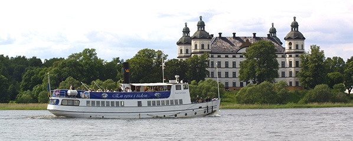

Quick navigation
Registration
Financial Support
Excursions
Help
Early Registration is open
- Early bird
- SEK 3150
- SEK 3940
- Until 2016-APR-01
- REGISTER
- Regular bird
- SEK 3650
- SEK 4560
- Until 2016-MAY-20
- REGISTER
- Late bird
- SEK 4150
- SEK 5190
- Until 2016-JUN-07
- REGISTER
** Prices listed in black exclude VAT and prices in grey include 25% VAT.
The registration fee includes:
- Conference attendance and materials,
- access to astronomer-friendly magic wireless internet,
- light snacks and delicious drinks during conference breaks,
- and an opening reception with wonderful wine.
The workshop banquet will be held on Thursday inside Uppsala's castle. Attendance costs an additional
1050 SEK to the registration fee. You can register yourself and eventual guests to the
banquet during the registration process.
Request for financial support
If you are interested in receiving financial support to attend the 19th Cambridge Workshop on Cool Stars,
Stellar Systems, and the Sun, please apply using the
following form.
We anticipate providing support in
two forms: registration fee waivers and travel reimbursements. Total amounts will be based on a
combination of need and funding availability.
Financial support form
Wednesday Excursions
Day Tour to Skokloster

Travel on the
m/s Kung Carl Gustaf down the Fyris River
and through Ekoln, the northern gulf of Lake Mälaren, to
Skokloster Castle. You'll then have 2 hours to explore the castle and castle grounds
before traveling on the boat back to Uppsala. On the way to Skokloster a lunch buffé will
be served.
Note: Due to bridge construction, there is the possibility the
boat will not be able to make the journey. A bus will be provided if this is the case.
Cost: 450 SEK — Time: 6 hours — Limit: 100 participants.
Visit Historic Sigtuna
Cost: 200 SEK — Time: 5 hours — Limit: 100 participants.
Day Pass to Stockholm
Cost: 200 SEK — Time: Unlimited — Limit: None.
Brewery Tour & Tasting at Slottskällans Bryggeri
Take a tour of Uppsala's largest brewery,
Slottskällans Bryggeri.
During the three hour
long tour you'll learn about the brewery's history, the brewing process, and different
beer styles. At the end, samples of "green" beer direct from the fermentation tanks will
available. Oh, and you'll get to enjoy the
selection
of beer that Slottskällans has to offer!
Light snacks will be provided.
Cost: 450 SEK — Time: 3 hours — Limit: 35 participants.
Tour of Linné Museum & Garden
Follow Carl von Linné on a tour of his home and garden.
Cost: 220 SEK — Time: 1 hour — Limit: 28 participants.
Tour of the Uppsala Castle
Go on a unique guided tour of Uppsala's castle.
Cost: 150 SEK — Time: 1 hour — Limit: 50 participants.
Guided Walking Tour of Uppsala
Cost: 150 SEK — Time: 2 hours — Limit: 50 participants.